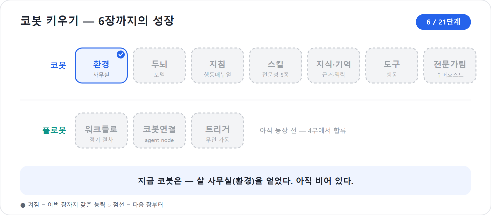

6장. 어디에 만들 것인가 — Power Platform 환경
신입을 채용하기로 했다면, 채용 공고를 쓰기 전에 정해 둘 것이 하나 있다. 이 사람을 어느 사무실에 앉힐 것인가다. 코봇도 마찬가지다. 코봇을 만들기 전에, 코봇이 일할 자리부터 정해야 한다. 그 자리를 Power Platform에서는 환경(Environment)이라 부른다. 많은 사람이 이 단계를 건너뛰고 곧장 에이전트부터 만들었다가 나중에 적잖은 대가를 치른다. 이 장은 그 후회를 미리 막는다.
5장에서 우리는 신버전 Copilot Studio의 화면이 어떤 주장을 품고 있는지 보았다. Build, Preview, Evaluate, Monitor라는 네 탭은 “대화를 그리는 도구”가 아니라 “AI 직원을 만들고 검증하고 운영하는 작업대”라는 선언이었다. 이제 그 작업대를 실제로 열어야 한다. 그런데 작업대는 허공에 떠 있지 않다. 어느 환경에 들어가느냐에 따라 보이는 데이터, 쓸 수 있는 연결, 적용되는 정책, 나중에 운영으로 옮기는 난이도가 달라진다.
2026년 기준 주의
이 장은 Microsoft Learn의 새 에이전트 경험 문서와 Power Platform 환경 문서를 기준으로 한다. 새 에이전트 경험은 클래식과 나란히 제공되며, 홈에서 Try it now로 진입할 수 있다. 새 경험과 클래식 경험 사이에는 에이전트를 서로 이전하는 경로가 없다. 기존 클래식 에이전트는 그대로 유지하되, 이 책에서 새로 만드는 코봇은 2026년 새 에이전트 경험에 한정한다.
환경은 코봇이 일하는 사무실이다
환경을 한 문장으로 옮기면, 코봇이 일하는 사무실 건물이다. 회사 하나, 곧 Microsoft Entra 테넌트 안에 사무실 건물은 여럿 있을 수 있다. 연습과 실험을 위한 건물이 따로 있고, 실제 고객을 맞는 건물이 따로 있다. 팀별·부서별로 나누기도 하고, 한국·일본·유럽처럼 데이터 위치 요구가 다른 지사별로 나누기도 한다. 우리가 만든 코봇은 반드시 그중 한 건물에 입주한다. 어느 건물에도 속하지 않고 떠 있는 코봇은 없다.
이 비유가 단순한 말장난이 아닌 까닭은, 건물마다 갖춘 설비가 다르기 때문이다. 코봇이 다루는 데이터(Dataverse), 외부 시스템과 잇는 연결, 무엇을 주고받아도 되는지 정한 데이터 손실 방지(DLP) 정책, 사용자와 제작자 권한, 그리고 쓸 수 있는 용량이 환경 단위로 묶여 있다. 코봇은 자기가 입주한 건물의 설비만 쓸 수 있다. 옆 건물에 좋은 회의실이 있어도, 내 건물에 없으면 쓰지 못한다.
쉬운 풀이 — Dataverse
Power Platform이 데이터를 보관·관리하는 회사 공용 데이터 금고. 고객 목록·프로젝트 대장 같은 구조화 정보가 담긴다.
쉬운 풀이 — DLP (Data Loss Prevention)
회사 자료가 허락 없이 빠져나가지 못하게 막는 보안 ‘교통 규칙’. 어떤 시스템끼리 데이터를 주고받아도 되는지 정한다.
Power Platform 공식 문서는 환경을 조직의 비즈니스 데이터, 앱, 챗봇, 흐름을 저장하고 관리하고 공유하는 공간이라고 설명한다. Copilot Studio 문서도 같은 맥락에서, 에이전트와 앱과 흐름은 환경에 저장되며 환경마다 역할, 보안 요구, 대상 사용자가 다를 수 있다고 말한다. 입문자가 기억할 문장은 하나면 충분하다.
코봇은 환경에 산다. 환경은 데이터·권한·정책·용량의 경계다.
이 경계를 모르고 만들면 코봇이 왜 어떤 파일은 읽고 어떤 연결은 쓰지 못하는지, 왜 같은 조직 안의 다른 사람이 만든 플로봇을 보지 못하는지, 왜 게시하려는 순간 권한과 용량 문제가 나타나는지 이해하기 어렵다.
코봇 한마디
"저는 어느 환경에 들어가느냐에 따라 볼 수 있는 데이터와 쓸 수 있는 손발이 달라져요. 코봇을 키우기 전, 먼저 제 사무실 문패부터 확인해 주세요!"
새 경험은 어디에서 켜는가
2026년 새 에이전트 경험은 Copilot Studio 안에서 클래식과 공존한다. Microsoft Learn의 새 경험 개요는 클래식 홈 화면의 배너에서 Try it now를 선택해 새 경험을 시도할 수 있다고 설명한다. 새 경험에 들어가면 다시 토글로 돌아갈 수도 있다. 다만 돌아갈 수 있다는 말은 화면을 전환할 수 있다는 뜻이지, 이미 만든 에이전트를 변환할 수 있다는 뜻이 아니다.
새 경험과 클래식은 건물 안의 다른 회의실 정도가 아니라 설계 철학이 다른 사무 공간이다.
| 구분 | 클래식 경험 | 새 에이전트 경험 |
|---|---|---|
| 만드는 방식 | 토픽, 흐름, 분기, 노드 중심 | 자연어 설명과 지침 중심 |
| 화면의 중심 | Topics, Knowledge, Actions, Settings 등 분리된 메뉴 | Build, Preview, Evaluate, Monitor 네 탭 |
| 행동 방식 | 명시적 토픽 트리거와 대화 설계 | 지침과 향상된 오케스트레이션의 추론 |
| 오케스트레이션 | 모드 선택 가능 | 모든 에이전트에 향상된 오케스트레이션 적용 |
| 이전 | 클래식 안에서 유지 | 클래식↔︎새 경험 상호 이전 불가 |
따라서 이 책을 따라 할 때는 먼저 자신이 어느 경험에 있는지 확인해야 한다. 화면 상단에 Build · Preview · Evaluate · Monitor가 보이면 새 경험이다. 왼쪽에 Topics가 중심 메뉴로 보이고 노드 캔버스가 주 무대라면 클래식이다. 클래식은 옛 방식으로만 언급한다. 지금부터 만드는 코봇은 새 경험에서 시작한다.
함정
“새 경험으로 만들다가 마음에 안 들면 클래식으로 옮기면 되겠지”라고 생각하면 안 된다. 공식 문서 기준으로 새 경험에서 만든 에이전트는 클래식으로 이전할 수 없고, 클래식에서 만든 에이전트도 새 경험으로 이전할 수 없다. 새 경험을 쓰려면 새 경험에서 새로 만든다.
Create에서 Build로 들어가는 흐름
환경을 확인했다면 이제 코봇의 자리로 들어간다. 실제 흐름은 다음처럼 기억하면 된다.
- Copilot Studio에 접속한다.
- 홈에서 새 에이전트 경험을 사용한다. 클래식 홈이라면 Try it now로 새 경험에 들어간다.
- 화면 상단 또는 메뉴의 환경 전환기(environment switcher)에서 지금 작업할 환경을 고른다.
- Create 또는 새 에이전트 만들기를 선택한다.
- 코봇이 어떤 일을 할지 자연어로 설명한다.
- 생성된 에이전트의 Build 탭에서 지침, 지식, 도구와 스킬, 모델, 연결된 에이전트를 다듬는다.
여기서 중요한 순서는 “Create → Build”다. Create는 입사 절차에 가깝다. 코봇의 대략적인 목적을 설명하고, 이름과 기본 윤곽을 잡는다. Build는 배치 후 책상을 꾸미는 과정이다. Instructions, Knowledge, Tools and skills, Model, Connected agents 같은 구성요소를 실제 업무에 맞게 조정한다.
새 경험이 자연어 우선이라는 말은 “아무 생각 없이 한 줄만 쓰면 끝난다”는 뜻이 아니다. 자연어 설명으로 출발점이 빨라졌다는 뜻이다. 좋은 조직은 채용 공고도 대충 쓰지 않는다. “프로젝트 업무를 도와주는 에이전트”보다 “사내 워크숍 프로젝트의 기획, 일정, 예산, 리스크, 보고 산출물을 순서대로 준비하는 PM 에이전트”가 훨씬 좋은 출발점이다.
러닝 예제의 첫 코봇은 이렇게 설명할 수 있다.
“사내 프로젝트 운영을 돕는 PM 에이전트를 만들고 싶습니다. 사용자가 새 프로젝트를 시작하면 목표와 범위, 이해관계자, 일정, 예산, 리스크, 보고서 초안을 차례로 정리하도록 도와주세요. 확실하지 않은 정보는 추측하지 말고 질문하세요.”
이 한 문장은 7장에서 더 다듬는다. 지금은 그보다 앞선 질문, 곧 “이 문장을 어느 사무실에서 입력할 것인가”가 핵심이다.
한 번 정하면 못 바꾸는 것 — 최초 저장 전 Agent details
Create로 코봇을 만들고 Build에서 다듬다 보면 무심코 지나치는 화면이 있다. 에이전트 설정(Agent settings)의 Agent details다. 여기에는 코봇의 신원(identity)에 해당하는 세 가지가 있는데, 공통점이 하나 있다. 처음 저장하는 순간 잠기고, 그 뒤로는 읽기 전용이 되어 바꿀 수 없다. 신입사원으로 치면 사번과 소속, 사용 언어를 입사 첫날 확정하는 것과 같다.
| 항목 | 무엇인가 | 왜 미리 정해야 하나 |
|---|---|---|
| Schema name(스키마 이름) | 시스템이 이 코봇을 참조하는 고유 이름. 비워 두면 첫 저장 때 에이전트 이름에서 자동 생성된다. | 이후 솔루션·연동이 이 이름으로 코봇을 부른다. 자동 생성 이름이 마음에 안 들어도 못 바꾼다. |
| Solution(솔루션) | 이 코봇이 속할 Power Platform 솔루션. 기본값은
Common Data Services Default Solution. |
기본 솔루션에 들어가면 21장 ALM에서 환경 간 이동·버전 관리가 어렵다. 한 번 들어간 솔루션은 못 바꾼다. |
| Primary language(기본 언어) | 코봇이 응답에 우선 쓸 언어. 기본값은 English. | 한국어 코봇이라면 첫 저장 전에 한국어로 바꿔야 한다. 영어로 저장하면 되돌릴 수 없다. |
그래서 권하는 순서가 있다. 코봇을 만들기 전에 솔루션(환경 사이로 옮기는 묶음 꾸러미)을 먼저 만들고, Agent details에서 그 솔루션을 골라 둔다.
- 21장에서 다룰 ALM을 생각하면, 코봇은 기본 솔루션이 아니라 목적에 맞는 전용 솔루션 안에 두는 편이 좋다. 내보내기·가져오기·버전 관리가 솔루션 단위로 이뤄지기 때문이다.
쉬운 풀이 — ALM
코봇을 개발→테스트→운영 환경으로 승격하며 팀 자산으로 관리하는 체계(Application Lifecycle Management).
- 그러므로 코봇 만들기를 누르기 전에 솔루션을 하나 준비한다(없으면 새로 만든다).
- Create로 코봇을 만든 뒤 첫 저장 전에 Agent settings → Agent details에서 Solution과 Primary language를 지정한다.
- 저장한다. 이 세 가지는 저장과 동시에 잠긴다.
함정
“일단 만들고 나중에 솔루션·언어를 바꾸자”는 통하지 않는다. 잘못 저장했다면 사실상 방법은 하나, 새 코봇을 다시 만드는 것이다. 첫 저장은 ‘이름 정하는 순간’이 아니라 ‘신원을 확정하는 순간’이다.
"저의 첫 저장은 출생신고라서, 솔루션과 언어를 대충 정하면 나중에 새로 태어나야 할 수도 있어요. 저장 버튼을 누르기 전 한 번만 더 신원을 확인해 주세요!"
개발용 사무실과 운영용 사무실
신버전에서 권하는 정석은 적어도 두 개의 사무실을 구분해 쓰는 것이다. 하나는 개발(dev, 연습용) 또는 샌드박스 환경, 곧 연습용 사무실이다. 마음껏 만들고 부수고 실험해도 누구에게도 폐가 가지 않는다. 다른 하나는 운영(Production, prod·실제용) 환경, 실제 사용자에게 코봇을 내보내는 사무실이다.
코봇은 연습용 사무실에서 태어나 자라고, 충분히 다듬어진 뒤 운영 사무실로 입주한다. 신입을 곧장 고객 응대에 투입하지 않고, 사내 교육장에서 훈련시킨 뒤 현장에 내보내는 것과 같다. 이 책의 러닝 예제에서도 신입 코봇은 개발·샌드박스 성격의 환경에서 시작한다. “지금 이 사무실은 연습용이고, 나중에 운영 사무실로 옮길 수 있다”는 전제를 처음부터 깔아 두는 것이다.
Power Platform에는 여러 환경 유형이 있다. 입문 단계에서는 다음 정도만 구분해도 충분하다.
| 환경 유형 | 비유 | 언제 쓰나 | 주의할 점 |
|---|---|---|---|
| Default | 모두가 드나드는 공용 라운지 | 개인 실험, 가벼운 탐색 | 공식 문서도 운영 에이전트는 비기본 production 환경 사용을 권한다 |
| Developer | 개인 연습실 | 개인 학습, 프로토타입 | 보통 소유자 중심이며 팀 운영에는 한계가 있다 |
| Sandbox | 교육장·실험실 | 개발, 테스트, 리셋·복사 실험 | 운영 사용자에게 직접 노출하지 않는다 |
| Production | 실제 매장·고객 접점 | 운영 배포, 장기 운영 | 권한·용량·보안 정책을 갖추고 관리한다 |
| Trial | 임시 팝업 사무실 | 단기 체험 | 만료되면 에이전트와 관련 데이터가 사라질 수 있다 |
특히 Default 환경은 편해 보이지만 실무 운영에는 조심해야 한다. Power Platform 문서는 Default 환경이 실험, 탐색, 가벼운 앱 시험 개발용 성격이며 운영 워크로드에 쓰지 않는 편이 좋다고 설명한다. Copilot Studio 환경 문서도 운영 배포용 에이전트에는 비기본 production 환경을 쓰라고 적고 있다. Default 환경은 회사 전체의 공용 라운지에 가깝다. 누구나 들어오기 쉬운 곳에 고객 응대 직원을 앉히는 것은 관리가 어렵다.
현장에서
한국 기업에서는 “일단 기본 환경에 만들어 보고 잘 되면 나중에 옮기자”가 자주 나온다. 개인 데모라면 괜찮다. 그러나 고객 정보, 임직원 개인정보, 비용 집행, 승인 흐름이 붙는 순간 이야기가 달라진다. 운영 후보라면 처음부터 운영용 환경과 분리된 개발 환경에서 시작하고, 21장에서 다룰 ALM 경로로 승격하는 편이 안전하다.
환경을 모르고 시작하면 생기는 일
문제는 이 구분을 의식하지 않고 시작했을 때 벌어진다. 아무 생각 없이 손에 잡히는 기본 환경에 운영용 코봇을 만들어 버리면, 나중에 세 가지 곤란이 한꺼번에 닥친다.
첫째, 이전이 번거롭다. Copilot Studio 에이전트는 Power Platform 솔루션 안에 들어간다. 공식 문서에 따르면 에이전트를 만들면 자동으로 기본 솔루션에 추가되고, 여러 환경을 오가며 관리하거나 배포 파이프라인을 쓰려면 사용자 지정 솔루션을 만들어 관리할 수 있다. 즉 옮기는 길은 있지만, 짐을 싸고 풀어야 한다. 처음부터 짐가방을 준비해 둔 팀과, 책상 위 물건을 박스에 뒤섞어 담는 팀의 차이는 크다.
둘째, 정책이 따라오지 않는다. DLP 정책과 보안 역할은 환경 단위로 적용된다. 개발 환경에서는 Teams와 SharePoint 연결이 허용되었는데 운영 환경에서는 차단될 수 있다. 반대로 운영 환경에서는 허용하면 안 되는 개인 커넥터가 개발 환경에는 열려 있을 수도 있다. 코봇이 “어제는 되던 일을 오늘은 못 한다”고 말할 때, 원인은 지침이 아니라 환경 정책일 수 있다.
셋째, 용량과 할당이 발목을 잡는다. Copilot Studio는 메시지와 활동에 따라 Copilot Credits를 소비하고, 환경에는 할당과 제한이 붙는다. 워크플로와 플로봇 실행은 4부와 21장에서 다시 다루지만, 출발점은 지금이다. 어느 환경에서 만들고, 어느 환경의 용량을 쓰며, 누가 게시할 권한을 갖는지 모르면 운영 직전에 멈춘다.
그래서 화면 상단의 환경 이름과 Switch environment 표시를 의식하는 습관이 중요하다. 무언가를 만들기 전에 지금 어느 사무실에서 일하는지 한 번 확인하는 것만으로, 위의 세 가지 곤란은 대부분 피할 수 있다.
솔루션은 코봇의 이삿짐 상자다
환경이 사무실이라면 솔루션(Solution)은 이삿짐 상자다. Copilot Studio 문서는 에이전트가 Power Platform 솔루션 안에 만들어지며, 사용자 지정 솔루션을 통해 에이전트를 여러 환경에서 관리하거나 파이프라인 배포 같은 ALM 시나리오에 사용할 수 있다고 설명한다.
처음 배우는 단계에서 솔루션의 모든 기능을 알 필요는 없다. 다만 다음 세 가지 감각은 지금 잡아 두자.
| 개념 | 비유 | 지금 알아둘 것 |
|---|---|---|
| 환경 | 사무실 건물 | 코봇이 실제로 사는 경계다 |
| 솔루션 | 이삿짐 상자 | 코봇과 관련 구성요소를 묶어 옮긴다 |
| 파이프라인 | 이사 절차서 | 개발→테스트→운영 승격을 자동화한다 |
운영까지 갈 코봇이라면 기본 솔루션에 아무렇게나 두지 말고, 팀
이름이나 프로젝트 이름이 드러나는 사용자 지정 솔루션을 만드는 편이 좋다.
예를 들어 CobotProjectOps 같은 솔루션을 만들고 그 안에 PM
코봇을 담아 두면, 나중에 21장에서 다룰 ALM과 거버넌스 이야기가 훨씬
자연스럽게 이어진다.
팁
솔루션 이름은 화면에 보이는 표시 이름과 내부 이름을 함께 갖는다. 운영 후보라면 “테스트”, “내꺼”, “새 솔루션 1”처럼 임시 이름을 피하자. 사내 표준이 있다면 팀명·업무명·단계가 드러나게 정한다. 예:ProjectOps_Agents_Dev.
"솔루션은 제가 운영 사무실로 이사 갈 때 들고 가는 상자예요. 처음부터 제 물건을 전용 상자에 담아 두면 ALM 여정이 훨씬 가벼워집니다!"
러닝 예제: 코봇의 첫 사무실 고르기
이제 우리 코봇의 첫 자리를 정해 보자. 상황은 이렇다. 당신은 사내 워크숍과 소규모 프로젝트를 운영하는 팀에 있다. 코봇은 앞으로 프로젝트 기획서, 일정표, 예산안, 리스크 레지스터, 보고서를 도와줄 예정이다. 아직 실제 임직원에게 공개할 단계는 아니다.
이때 좋은 선택은 다음과 같다.
- Power Platform 관리자 또는 환경 관리자와 협의해 개발·샌드박스 성격의 환경을 준비한다.
- Copilot Studio에서 해당 환경으로 전환한다.
- 솔루션 탐색기에서 프로젝트용 사용자 지정 솔루션을 만들거나, 조직 표준 솔루션을 선택한다.
- 새 경험으로 들어가 코봇을 만든다.
- Build 탭에서 지침과 모델을 다듬고, 9장 이후 스킬·지식·도구를 차례로 붙인다.
- Preview와 Evaluate로 충분히 검증한 뒤, 21장의 ALM 절차를 통해 운영 환경으로 승격한다.
작아 보이는 순서지만 중요하다. 코봇은 나중에 예산 정보를 다룰 수 있고, Teams로 보고를 보낼 수 있고, 워크플로를 실행할 수 있다. 그런 코봇을 공용 라운지에 앉힐지, 통제된 프로젝트 사무실에 앉힐지는 단순한 취향이 아니다. 운영 품질의 첫 결정이다.
모든 길이 환경에서 시작한다
환경은 이 책 곳곳과 이어지는 출발점이기도 하다. 7장에서는 같은 환경 안에서 코봇을 자연어로 만들고 모델을 고른다. 9장에서는 Build 탭의 Tools and skills에 Skill을 붙인다. 10장에서는 지식과 기억이 어떤 데이터 경계 안에서 작동하는지 본다. 11장에서는 도구와 연결이 환경의 권한과 DLP 정책을 만난다. 12장에서는 연결된 에이전트가 같은 조직 안에서 어떻게 팀을 이루는지 살핀다. 4부에서는 Workflows와 트리거가 환경의 연결과 용량 위에서 움직인다. 5부에서는 Preview와 Evaluate로 개발 환경에서 검증한다. 6부에서는 게시, Monitor, 거버넌스·비용·ALM을 운영 환경에서 다룬다.
지금은 그 세부를 다 알 필요가 없다. 다만 “코봇은 사무실에 산다”는 사실 하나만 몸에 새겨 두면, 뒤의 장들이 한결 수월해진다.
핵심 정리
| # | 요점 |
|---|---|
| 1 | 환경은 코봇이 일하는 사무실이다. 데이터·권한·정책·용량의 경계가 환경 단위로 묶인다. |
| 2 | 새 에이전트 경험은 클래식과 공존하지만, 만든 에이전트를 서로 이전할 수 없다. 이 책의 코봇은 새 경험에서 새로 만든다. |
| 3 | 새 경험은 홈의 Try it now로 진입하고, Build · Preview · Evaluate · Monitor 네 탭을 중심으로 일한다. |
| 4 | 운영 후보 에이전트는 기본 환경보다 비기본 production 환경과 분리된 개발·샌드박스 환경에서 시작하는 편이 안전하다. |
| 5 | 솔루션은 코봇의 이삿짐 상자다. 환경 간 이동과 ALM을 생각한다면 사용자 지정 솔루션에 담아 관리한다. |
| 6 | 만들기 전에는 항상 환경 전환기를 확인한다. “어느 사무실인가”를 확인하는 습관이 운영 사고를 줄인다. |
| 7 | 환경 선택은 7장의 생성, 9장의 Skill, 10장의 지식과 기억, 11장의 도구, 4부의 Workflows, 6부의 운영으로 이어진다. |
자주 묻는 질문(FAQ)
| 질문 | 답변 |
|---|---|
| 그냥 기본(Default) 환경에 만들면 안 되나요? | 학습용·개인 실험용으로는 가능하다. 그러나 운영 후보라면 비기본 production 환경과 별도의 개발·샌드박스 환경을 쓰는 편이 안전하다. |
| 환경은 나중에 바꿀 수 있나요? | 에이전트는 솔루션으로 export/import해 다른 환경으로 옮길 수 있다. 다만 연결, 권한, 정책, 용량을 함께 점검해야 하므로 처음부터 계획하는 편이 낫다. |
| 솔루션은 꼭 알아야 하나요? | 처음 실습만 할 때는 깊이 몰라도 된다. 하지만 운영 배포와 ALM을 생각한다면 솔루션은 필수다. 자세한 절차는 21장에서 다룬다. |
| 환경 전환기는 어디서 확인하나요? | Copilot Studio 상단 메뉴의 환경 이름 또는 환경 전환 영역을 본다. 에이전트를 만들기 전 반드시 현재 환경을 확인한다. |
| Trial 환경에서 만든 코봇은 안전한가요? | 단기 체험에는 좋지만 만료되면 에이전트와 관련 데이터가 삭제될 수 있다. 오래 보관할 코봇은 적절한 환경으로 옮기거나 production으로 전환한다. |
다음 장에서는
이 장에서 우리는 코봇이 앉을 사무실을 정했다. 이제 책상 앞에 앉은 코봇에게 이름을 붙이고, “너는 어떤 일을 하는 동료인가”를 자연어로 설명할 차례다. 7장에서는 새 에이전트 경험의 자연어 우선 생성 흐름을 따라 코봇을 만들고, Build 표면의 Model 구성요소에서 어떤 두뇌를 고를지 살핀다. 특히 모델 선택과 비용을 혼동하지 않도록, 2026년 기준 비용 캐논을 정확히 잡고 간다.
실습 — 코봇 키우기 6단계: 코봇이 살 사무실을 정한다

〔이어받기〕 5장의 능력 지도(머릿속)를 들고, 이제 빌더를 켠다. 코봇이 태어날 자리부터 정한다.
5-a. 개발자 환경을 고른다. Switch environment에서 개발자(Developer) 환경으로 들어간다. “지금 이 사무실은 연습용, 나중에 운영 사무실로 옮긴다”를 전제로 깐다.
5-b. 환경에 묶이는 것을 확인한다. 데이터(Dataverse)·연결·DLP·용량이 모두 환경 단위임을 본다 — 잘못된 환경에 만들면 이전이 번거롭다.
5-c. (권장) 전용 솔루션을 먼저 만든다. 코봇을 만들기 전에 전용 솔루션을 만들어 두면, 7장 첫 저장에서 Schema name·Solution이 깔끔하게 잠긴다(21장 ALM 복선).
〔성장〕 코봇이 태어날 사무실(환경) 을 얻었다. 아직 비어 있다. 〔검증 포인트〕 우측 상단에 내가 의도한 개발 환경 이름이 떠 있으면 통과.